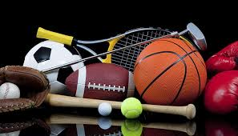

What Are Sports?
Sports are physical activities that involve skill, competition, and often teamwork. They have been an essential part of human culture for centuries, offering both entertainment and physical development.
Importance of Sports
Sports contribute to physical fitness, mental health, and social skills. They promote discipline, teamwork, and perseverance.
Types of Sports
- Team Sports: Football, Basketball, Cricket
- Individual Sports: Tennis, Athletics, Swimming